Chapter 4
Categories and Functors, Without Admitting It
In this chapter we begin to use our understanding of sets to examine more interesting mathematical worlds, each of which organizes understanding of a certain kind of domain. For example, monoids organize thoughts about agents acting on objects. Groups are monoids except restricted to only allow agents to act in reversible ways. We then study graphs, which are systems of nodes and arrows that can capture ideas like information flow through a network or model connections between building blocks in a material. We discuss orders, which can be used to study taxonomies or hierarchies. Finally we take a mathematical look at databases, which actually subsume everything else in the chapter. Databases are connection patterns for structuring information.
Everything studied in this chapter is an example of a category (see Chapter 5). So is Set, the category of sets studied in Chapters 2 and 3. One way to think of a category is as a bunch of objects and a connection pattern between them. The category Set has individual sets as objects, with functions serving as the connections between them. But there is a certain self-similarity here—each set, thought of as a bag of dots, can itself be viewed as a category: the objects inside it are just disconnected. Each set is a category, but there is also a category of sets. In this way, sets have an interior view and an exterior view, as do all the categories in this chapter. Each monoid is a category, but there is also a category of monoids.
However, the word category is not used much in this chapter. It seems preferable to let the ideas arise as interesting structures in their own right before explaining how everything fits into a single framework.
4.1 Monoids
A common way to interpret phenomena around us is to say that agents are acting on objects. For example, the user of a computer drawing program acts on the canvas in certain prescribed ways. Choices of actions from an available list can be performed in sequence to transform one image into another. As another example, one might investigate the notion that time acts on the position of hands on a clock in a prescribed way. A first rule for actions is captured in the following slogan.
Slogan 4.1.0.14.
The performance of a sequence of several actions is itself the performance of an action—a more complex action, but an action nonetheless.
Mathematical objects called monoids and groups are tasked with encoding the agent’s perspective, i.e., what the agent can do, and what happens when she does a sequence of actions in succession. A monoid can be construed as a set of actions together with a formula that encodes how a sequence of actions is itself considered an action. A group is the same as a monoid except that every action is required to be reversible.
4.1.1 Definition and examples
Definition 4.1.1.1 (Monoid). A monoid is a sequence (M, e, ⋆), where M is a set, e ∈ M is an element, and ⋆: M × M → M is a function, such that the following monoid laws hold for all m, n, p ∈ M:
- m ⋆ e = m.
- e ⋆ m = m.
- (m ⋆ n) ⋆ p = m ⋆ (n ⋆ p).
We refer to e as the unit element and to ⋆ as the multiplication formula for the monoid.1 We call the first two rules unit laws and the third rule the associativity law for monoids.
Remark 4.1.1.2. To be pedantic, the conditions from Definition 4.1.1.1 should be stated
The way they are written in Definition 4.1.1.1 is called infix notation,. Given a function ⋆: A × B → C, we may write a ⋆ b rather than ⋆(a, b).
Example 4.1.1.3 (Additive monoid of natural numbers). Let M = ℕ be the set of natural numbers. Let e = 0, and let ⋆: M × M → M denote addition, so that ⋆(4, 18) = 4 ⋆ 18 = 22. Then the equations m ⋆ 0 = m and 0 ⋆ m = m hold, and (m ⋆ n) ⋆ p = m ⋆ (n ⋆ p) because, as we learned in grade school, addition is associative. By assigning e and ⋆ in this way, we have given ℕ the structure of a monoid. We usually denote it (ℕ, 0, +).
Remark 4.1.1.4. Sometimes we are working with a monoid (M, e, ⋆), and the unit e and multiplication ⋆ are somehow clear from context. In this case we might refer to the set M as though it were the whole monoid. For example, if we were discussing the monoid from Example 4.1.1.3, we might refer to it as ℕ. The danger comes because sets may have multiple monoid structures (see Exercise 4.1.1.6).
Example 4.1.1.5 (Nonmonoid). If M is a set, we might call a function f : M × M → M an operation on M. For example, if M = ℕ is the set of natural numbers, we can consider the operation f : ℕ × ℕ → ℕ called exponentiation e.g., f(2, 5) = 2 × 2 × 2 × 2 × 2 = 32 and f(7, 2) = 49. This is indeed an operation, but it is not the multiplication formula for any monoid. First, there is no possible unit. Trying the obvious choice of e = 1, we see that a1 = a (good), but that 1a = 1 (bad: we need it to be a). Second, this operation is not associative because in general a(bc) ≠ (ab)c. For example, 2(12) = 2, but (21)2 = 4.
One might also attempt to consider an operation f : M × M → M that upon closer inspection is not even an operation. For example, if M = ℤ, then exponentiation is not even an operation. Indeed,
Exercise 4.1.1.6.
Let M = ℕ be the set of natural numbers. Taking e = 1 as the unit, devise a formula for ⋆ that gives ℕ the structure of a monoid.
Solution 4.1.1.6.
Let ⋆ denote the usual multiplication of natural numbers, e.g., 5 ⋆ 7 = 35. Then for any m, n, p ∈ ℕ, we have 1 ⋆ m = m ⋆ 1 = m and (m ⋆ n) ⋆ p = m ⋆ (n ⋆ p), as required.
Exercise 4.1.1.7.
Find an operation on the set M = {1, 2, 3, 4}, i.e., a legitimate function f : M × M → M, such that f cannot be the multiplication formula for a monoid on M. That is, either it is not associative or no element of M can serve as a unit.
Exercise 4.1.1.8.
In both Example 4.1.1.3 and Exercise 4.1.1.6, the monoids (M, e, ⋆) satisfied an additional rule called commutativity, namely, m ⋆ n = n ⋆ m for every m, n ∈ M. There is a monoid (M, e, ⋆) in linear algebra that is not commutative; if you have background in linear algebra, what monoid (M, e, ⋆) might I be referring to?
Exercise 4.1.1.9.
Recall the notion of commutativity for monoids from Exercise 4.1.1.8.
a. What is the smallest set M that you can give the structure of a noncommutative monoid?
b. What is the smallest set M that you can give the structure of a monoid?
Example 4.1.1.10 (Trivial monoid). There is a monoid with only one element, M = ({e}, e, ⋆), where ⋆: {e} × {e} → {e} is the unique function. We call this monoid the trivial monoid and sometimes denote it 1.
Example 4.1.1.11. Suppose that (M, e, ⋆) is a monoid. Given elements m1, m2, m3, m4, there are five different ways to parenthesize the product m1 ⋆ m2 ⋆ m3 ⋆ m4, and the associativity law for monoids will show them all to be the same. We have
| ((m1 ⋆ m2) ⋆ m3) ⋆ m4 | = (m1 ⋆ m2) ⋆ (m3 ⋆ m4) |
| = (m1 ⋆ (m2 ⋆ m3)) ⋆ m4 | |
| = m1 ⋆ (m2 ⋆ (m3 ⋆ m4)) | |
| = m1 ⋆ ((m2 ⋆ m3) ⋆ m4). |
In fact, the product of any list of monoid elements is the same, regardless of parenthesization. Therefore, we can unambiguously write m1 ⋆ m2 ⋆ m3 ⋆ m4 ⋆ m5 rather than any given parenthesization of it. A substantial generalization of this is known as the coherence theorem and can be found in Mac Lane [29].
4.1.1.12 Free monoids and finitely presented monoids
Definition 4.1.1.13. Let X be a set. A list in X is a pair (n, f), where n ∈ ℕ is a natural number (called the length of the list) and f : n → X is a function, where n = {1, 2, …, n}.
We may denote such a list
The set of lists in X is denoted List(X).
The empty list is the unique list in which n = 0; we may denote it [ ]. Given an element x ∈ X, the singleton list on x is the list [x]. Given a list L = (n, f) and a number i ∈ ℕ with i ⩽ n, the ith entry of L is the element f(i) ∈ X.
Given two lists L = (n, f) and L′ = (n′, f′), define the concatenation of L and L′, denoted L ++ L′, to be the list (n + n′, f ++ f′), where f ++ f′ : n + n′ → X is given on 1 ⩽ i ⩽ n + n′ by
Example 4.1.1.14. Let X = {a, b, c, …, z}. The following are elements of List(X):
The concatenation of [a, b, c] and [p, a, a, a, p] is [a, b, c, p, a, a, a, p]. The concatenation of any list ℓ with [ ] is just ℓ.
Definition 4.1.1.15. Let X be a set. The free monoid generated by X is the sequence FX ≔ (List(X), [ ], ++), where List(X) is the set of lists of elements in X, [ ] ∈ List(X) is the empty list, and ++ is the operation of list concatenation. We refer to X as the set of generators for the monoid FX.
Exercise 4.1.1.16.
Let {☺} denote a one-element set.
a. What is the free monoid generated by the set {☺}?
b. What is the free monoid generated by ∅?
An equivalence relation that interacts well with the multiplication formula of a monoid is called a congruence on that monoid.
Definition 4.1.1.17. Let
Proposition 4.1.1.18. Suppose that
- Given any relation R ⊆ M × M, there is a smallest congruence S containing R. We call S the congruence generated by R.
- If R = ∅ and ∼ is the congruence it generates, then there is an isomorphism
- Suppose that ∼ is a congruence on
Proof. 1. Let LR be the set of all congruences on
2. If R = ∅, then the minimal reflexive relation {(m, m) | m ∈ M} ⊆ M × M is the congruence generated by M. We have an isomorphism
3. Let Q: M → M/∼ be the quotient function (as in Definition 3.3.1.1); note that it is surjective. We first want to give a monoid structure on M/∼, i.e., we need a unit element e′ and a multiplication formula ⋆′. Let e′ = Q(e). Suppose given p, q ∈ M/∼ and respectively let m, n ∈ M be a pair of representatives, so Q(m) = p and Q(n) = q. Define p⋆′q ≔ Q(m⋆n). If we chose a different pair of representatives Q(m′) = p and Q(n′) = q, then we would have m ∼ m′ and n ∼ n′ so (m ⋆ n) ∼ (m′ ⋆ n′), which implies Q(m ⋆ n) = Q(m′ ⋆ n′); hence the composition formula is well defined. It is easy to check that
Definition 4.1.1.19 (Presented monoid). Let G be a finite set, and let R ⊆ List(G) × List(G) be a relation. The monoid presented by generators G and relations R is the monoid
Each element r ∈ R is of the form r = (ℓ, ℓ′) for lists ℓ, ℓ′ ∈ List(G). For historical reasons we call the each of the resulting expressions ℓ ∼ ℓ′ a relation in R.
Slogan 4.1.1.20.
A presented monoid is a set of buttons you can press and some facts about when different button sequences have the same results.
Remark 4.1.1.21. Every free monoid is a presented monoid, because we can just take the set of relations to be empty.
Example 4.1.1.22. Let G = {a, b, c, d}. Think of these as buttons that can be pressed. The free monoid FG = (List(G), [ ], ++) is the set of all ways of pressing buttons, e.g., pressing a, then a, then c, then c, then d corresponds to the list [a, a, c, c, d]. The idea of presented monoids is that we can assert that pressing [a, a, c] always gives the same result as pressing [d, d] and that pressing [c, a, c, a] is the same thing as doing nothing.
In this case, the relation R ⊆ List(G) × List(G) would be
R |
|
| [a, a, c] | [d, d] |
| [a, c, a, c] | [] |
As in Proposition 4.1.1.18, the relation R generates a congruence ∼ on List(G), and this can be complex. For example, would you guess that [b, c, b, d, d, a, c, a, a, c, d] ∼ [b, c, b, a, d, d, d]? Here is the calculation in M = List(G)/∼ :
| [b, c, b, d, d, a, c, a, a, c, d] | = [b, c, b] ⋆ [d, d] ⋆ [a, c, a, a, c, d] |
| = [b, c, b, a] ⋆ [a, c, a, c] ⋆ [a, a, c, d] | |
| = [b, c, b, a, a, a, c, d] | |
| = [b, c, b, a] ⋆ [a, a, c] ⋆ [d] | |
| = [b, c, b, a, d, d, d]. |
Exercise 4.1.1.23.
Let K ≔ {BS, a, b, c, …, z}, a set having 27 elements. Suppose one thinks of BS ∈ K as the backspace key and the elements a, b, … z ∈ K as the letter keys on a keyboard. Then the free monoid List(K) is not quite appropriate for modeling the keyboard because we want, e.g., [a, b, d, BS] = [a, b].
a. Choose a set of relations for which the monoid presented by generators K and the chosen relations is appropriate to this application.
b. Under your relations, how does the singleton list [BS] compare with the empty list [ ]? Is that suitable?
4.1.1.24 Cyclic monoids
Definition 4.1.1.25. A monoid is called cyclic if it has a presentation involving only one generator.
Example 4.1.1.26. Let Q be a symbol; we look at some cyclic monoids generated by {Q}. With no relations the monoid would be the free monoid on one generator and would have underlying set {[ ], [Q], [Q, Q], [Q, Q, Q], …}, with unit element [ ] and multiplication given by concatenation (e.g., [Q, Q, Q] ++ [Q, Q] = [Q, Q, Q, Q, Q]). This is just ℕ, the additive monoid of natural numbers.
With the really strong relation [Q] ~ [ ] we would get the trivial monoid, as in Example 4.1.1.10.
Another possibility is given in the first part of Example 4.1.2.3, where the relation Q12 ~ [ ] is used, where Q12 is shorthand for [Q, Q, Q, Q, Q, Q, Q, Q, Q, Q, Q, Q]. This monoid has 12 elements.
Example 4.1.1.27. Consider the cyclic monoid with generator Q and relation Q7 = Q4. This monoid has seven elements,
where Q0 = e and Q1 = Q. As an example of the multiplication formula, we have:
One might depict the cyclic monoid with relation Q7 = Q4 as follows:
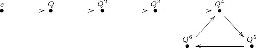
To see the mathematical source of this intuitive depiction, see Example 7.2.1.19.
Exercise 4.1.1.28.
Classify all the cyclic monoids up to isomorphism. That is, construct a naming system such that every cyclic monoid can be given a name in your system, no two nonisomorphic cyclic monoids have the same name, and no name exists in the system unless it refers to a cyclic monoid.
Hint: One might see a pattern in which the three monoids in Example 4.1.1.26 correspond respectively to ∞, 1, and 12, and think that Cyclic monoids can be classified by (i.e., systematically named by elements of) the set ℕ ⊔ {∞}. That idea is on the right track, but it is not complete.
Solution 4.1.1.28.
Cyclic monoids are either finite or infinite. The free monoid on one generator, (ℕ, 0, +) is the only infinite cyclic monoid, because once one makes a relation Qm ~ Qn on List(Q) for some n > m, it is ensured that there are only finitely many elements (in fact, n-many). Finite cyclic monoids can be drawn as backward σ’s (i.e., as 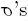), with varying loop lengths and total lengths. The finite cyclic monoids can be classified by the set
For each (n, k) ∈ FCM, there is a cyclic monoid with n elements and a loop of length k. For example, we can draw (8, 6) and (5, 1) respectively as
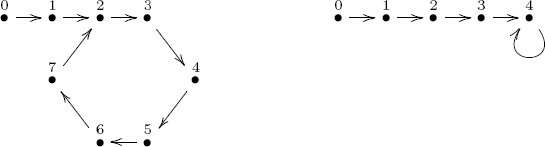
How do these pictures correspond to monoids? The nodes represent elements, so (8, 6) has eight elements. The unit element is the leftmost node (the only one with no arrow pointing to it). Each node is labeled by the length of the shortest path from the unit (so 0 is the unit). To multiply m ⋆ n, we see where the path of length m + n, starting at 0, ends up. So in the cyclic monoid of type (8, 6), we have 4 + 4 = 2, whereas in (5, 1), we have 4 + 4 = 4.
4.1.2 Monoid actions
Definition 4.1.2.1 (Monoid action). Let (M, e, ⋆) be a monoid, and let S be a set. An action of (M, e, ⋆) on S, or simply an action of M on S, or an M action on S, is a function
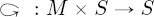
such that the following monoid action laws hold for all m, n ∈ M and all s ∈ S:
- e 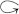 s = s
- m (n s) = (m ⋆ n) s.2
Remark 4.1.2.2. To be pedantic (and because it is sometimes useful), we may decide not to use infix notation. That is, we may rewrite as α: M × S → S and restate the conditions from Definition 4.1.2.1 as
- α(e, s) = s;
- α(m, α(n, s)) = α(m ⋆ n, s).
Example 4.1.2.3. Let S = {0, 1, 2, … , 11}, and let N = (ℕ, 0, +) be the additive monoid of natural numbers (see Example 4.1.1.3). We define a function : ℕ × S → S by taking a pair (n, s) to the remainder that appears when n + s is divided by 12. For example, 4 2 = 6 and 8 9 = 5. This function has the structure of a monoid action because the monoid laws from Definition 4.1.2.1 hold.
Similarly, let T denote the set of points on a circle, elements of which are denoted by a real number in the interval [0, 12), i.e.,
and let R = (ℝ, 0, +) denote the additive monoid of real numbers. Then there is an action R × T → T, similar to the preceding one (see Exercise 4.1.2.4).
One can think of this as an action of the monoid of time on the clock. Here T is the set of positions at which the hour hand may be pointing. Given any number r ∈ R, we can go around the clock by r many hours and get a new hour-hand position. For example, 7.25 8.5 = 3.75, meaning that 7.25 hours after 8:30 is 3:45.
Exercise 4.1.2.4.
Warning: This exercise is abstract.
a. Realize the set T ≔ [0, 12) ⊆ ℝ as a coequalizer of some pair of arrows ℝ ⇉ ℝ.
b. For any x ∈ ℝ, realize the mapping x+: T → T, implied by Example 4.1.2.3, using the universal property for coequalizers.
c. Prove that it is an action.
Solution 4.1.2.4.
a. Let f : ℝ → ℝ be given by f(x) = x + 12. Then idℝ and f are a pair of arrows ℝ → ℝ, and their coequalizer is T.
b. Let x ∈ ℝ be a real number. We want a function x+: T → T, but we begin with a function (by the same name) x+: ℝ → ℝ, given by adding x to any real number. The following solid-arrow diagram commutes because 12 + x = x + 12 for any x ∈ ℝ:
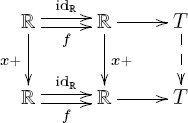
By the universal property for coequalizers, there is a unique dotted arrow T → T making the diagram commute, and this is x+: T → T. It represents the action “add x ∈ ℝ hours to clock position t ∈ T.”
c. Clearly, if x = 0, then the x+ function is idℝ, and it follows from the universal property that 0+ = idT. We see that x + (y + t) = (x + y) + t using the commutative diagram
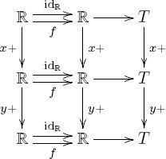
The universal property for coequalizers implies the result.
Exercise 4.1.2.5.
Let B denote the set of buttons (or positions) of a video game controller (other than, say, “start” and “select”), and consider the free monoid List(B) on B.
a. What would it mean for List(B) to act on the set of states of some (single-player) video game? Imagine a video game G′ that uses the controller, but for which List(B) would not be said to act on the states of G′. Now imagine a simple game G for which List(B) would be said to act. Describe the games G and G′.
b. Can you think of a state s of G, and two distinct elements ℓ, ℓ′ ∈ List(B) such that ℓ s = ℓ′ s?
c. In video game parlance, what would you call a monoid element b ∈ B such that for every state s ∈ G, one has b s = s?
d. In video game parlance, what would you call a state s ∈ S such that for every sequence of buttons ℓ ∈ List(B), one has ℓ s = s?
e. Define ℝ>0 to be the set of positive real numbers, and consider the free monoid M ≔ List(ℝ>0 × B). An element of this monoid can be interpreted as a list in which each entry is a button b ∈ B being pressed after a wait time t ∈ ℝ>0. Can you find a game that uses the controller but for which M does not act?
Application 4.1.2.6. Let f : ℝ → ℝ be a differentiable function of which we want to find roots (points x ∈ ℝ such that f(x) = 0). Let x0 ∈ ℝ be a starting point. For any n ∈ ℕ, we can apply Newton’s method to xn to get
This is a monoid (namely, ℕ, the free monoid on one generator) acting on a set (namely, ℝ).
However, Newton’s method can get into trouble. For example, at a critical point it causes division by zero, and sometimes it can oscillate or overshoot. In these cases we want to perturb a bit to the left or right. To have these actions available to us, we would add “perturb” elements to our monoid. Now we have more available actions at any point, but at the cost of using a more complicated monoid.
When publishing an experimental finding, there may be some deep methodological questions that are not considered suitably important to mention. For example, one may not publish the kind of solution-finding method (e.g., Newton’s method or Runge-Kutta) that was used, or the set of available actions, e.g., what kinds of perturbation were used by the researcher. However, these may actually influence the reproducibility of results. By using a language such as that of monoid actions, we can align our data model with our unspoken assumptions about how functions are analyzed.
Remark 4.1.2.7. A monoid is useful for understanding how an agent acts on the set of states of an object, but there is only one context for action—at any point, all actions are available. In reality, it is often the case that contexts can change and different actions are available at different times. For example, on a computer the commands available in one application have no meaning in another. This points us to categories, which are generalizations of monoids (see Chapter 5).
4.1.2.8 Monoid actions as ologs
If monoids are understood in terms of how they act on sets, then it is reasonable to think of them in terms of ologs. In fact, the ologs associated to monoids are precisely those ologs that have exactly one type (and possibly many arrows and commutative diagrams).
Example 4.1.2.9. This example shows how to associate an olog to a monoid action. Consider the monoid M generated by the set {u, d, r}, standing for “up, down, right,” and subject to the relations
We might imagine that M acts on the set of positions for a character in an old video game. In that case the olog corresponding to this action should look something like Figure 4.1.
4.1.2.10 Finite state machines
According to Wikipedia, a deterministic finite state machine is a quintuple (Σ, S, s0, δ, F), where
- Σ is a finite nonempty set of symbols, called the input alphabet;
- S is a finite, nonempty set, called the state set;
- δ : Σ × S → S is a function, called the state-transition function;
- s0 ∈ S is an element, called the initial state;
- F ⊆ S is a subset, called the set of final states.
Here we focus on the state transition function δ, by which the alphabet Σ acts on the set S of states (see Figure 4.2).
The following proposition expresses the notion of finite state automata in terms of free monoids and their actions on finite sets.
Proposition 4.1.2.11. Let Σ, S be finite nonempty sets. Giving a function δ : Σ×S → S is equivalent to giving an action of the free monoid List(Σ) on S.
Proof. The proof is sketched here, leaving two details for Exercise 4.1.2.13. By Definition 4.1.2.1, we know that function ϵ: List(Σ) × S → S constitutes an action of the monoid List(Σ) on the set S if and only if, for all s ∈ S, we have ϵ([ ], s) = s, and for any two elements m, m′ ∈ List(Σ), we have ϵ(m, ϵ(m′, s)) = ϵ(m ++ m′, s), where m ++ m′ is the concatenation of lists. Let
We need to prove that there is an isomorphism of sets
Given an element ϵ: List(Σ) × S → S in A, define ϕ(ϵ) on an element (σ, s) ∈ Σ × S by ϕ(ϵ)(σ, s) ≔ ϵ([σ], s), where [σ] is the one-element list. We now define
Given an element f ∈ HomSet(Σ × S, S), define ψ(f): List(Σ) × S → S on a pair (L, s) ∈ List(Σ) × S, where L = [ℓ1, … , ℓn] as follows. By induction, if n = 0, put ψ(f)(L, s) = s; if n ⩾ 1, let ∂L = [ℓ1, … , ℓn−1] and put ψ(f)(L, s) = ψ(f)(∂L, f(ℓn, s)).
One checks easily that ψ(f) satisfies these two rules, making it an action of List(Σ) on S. It is also easy to check that ϕ and ψ are mutually inverse, completing the proof. (See Exercise 4.1.2.13).
The idea of this section is summed up as follows:
Slogan 4.1.2.12.
A finite state machine is an action of a free monoid on a finite set.
Exercise 4.1.2.13.
Consider the functions ϕ and ψ as defined in the proof of Proposition 4.1.2.11.
a. Show that for any f : Σ × S → S, the map ψ(f): List(Σ) × S → S constitutes an action.
b. Show that ϕ and ψ are mutually inverse functions (i.e., ϕ ○ ψ = idHom(Σ×S,S) and ψ ○ ϕ = idA).
Solution 4.1.2.13.
a. Let s ∈ S be an arbitrary element. By the base of the induction, ψ(f)([ ], s) = s, so ψ(f) satisfies the unit law. Now let L1, L2 ∈ List(Σ) be two lists with L = L1 ++ L2 their concatenation. We need to show that ψ(f)(L1, ψ(f)(L2, s)) = ψ(f)(L, s). We do this by induction on the length of L2. If |L2| = 0, then L = L1 and we have that ψ(f)(L1, ψ(f)(L2, s)) = ψ(f)(L1, s) = ψ(f)(L, s).
Now suppose the result is true for all lists of length |L2| − 1 ⩾ 0. We have ∂L = L1 ++ ∂L2, where ∂ removes the last entry of a nonempty list. If ℓ is the last entry of L and L2, then we have
b. We first show that for f ∈ Hom(Σ × S, S), we have ϕ ○ ψ(f) = f. To do so, we choose (σ, s) ∈ Σ × S, and the formulas for ϕ and ψ from the proof of Proposition 4.1.2.11 give
We next show that for ϵ ∈ A, we have ψ ○ ϕ(ϵ) = ϵ. To do so, we choose (L, s) ∈ List(Σ) × S and show that ψ(ϕ(ϵ))(L, s) = ϵ(L, s). We do this by induction on the length n = |L| of L. If n = 0, then ψ(ϕ(ϵ))([ ], s) = s = ϵ([ ], s). We may now assume that n ⩾ 1 and that the result holds for ∂L. Let ℓ be the last entry of L. We use the formulas for ϕ and ψ, and the fact that ϵ is an action, to get the following derivation:
4.1.3 Monoid action tables
Let M be a monoid generated by the set G = {g1, … , gm}, and with some relations, and suppose that α: M × S → S is an action of M on a set S = {s1, … , sn}. We can represent the action α using an action table whose columns are the generators g ∈ G and whose rows are the elements of S. In each cell (row, col), where row ∈ S and col ∈ G, we put the element α(col, row) ∈ S.
Example 4.1.3.1 (Action table). If Σ and S are the sets from Figure 4.2, the displayed action of List(Σ) on S would be given by action table (4.1)
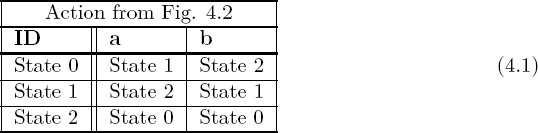
Example 4.1.3.2 (Multiplication action table). Every monoid (M, e, ⋆) acts on itself by its multiplication formula, ⋆: M × M → M. If G is a generating set for M, we can write the elements of G as the columns and the elements of M as rows, and call this a multiplication table. For example, let (ℕ, 1, *) denote the multiplicative monoid of natural numbers. The multiplication table is the usual multiplication table from grade school:
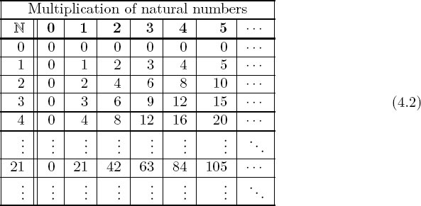
Try to understand what is meant by this: “Applying column 2 and then column 2 returns the same thing as applying column 4.”
Table (4.2) implicitly takes every element of ℕ as a generator (since there is a column for every natural number). In fact, there is a smallest generating set for the monoid (ℕ, 1, *), so that every element of the monoid is a product of some combination of these generators, namely, the primes and 0.
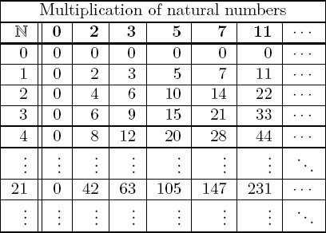
Exercise 4.1.3.3.
Let ℕ be the additive monoid of natural numbers, let S = {0, 1, 2, … , 11}, and let Clock: ℕ × S → S be the clock action given in Example 4.1.2.3. Using a small generating set for the monoid, write the corresponding action table.
4.1.4 Monoid homomorphisms
A monoid (M, e, ⋆) involves a set, a unit element, and a multiplication formula. For two monoids to be comparable, their sets, unit elements, and multiplication formulas should be appropriately comparable. For example, the additive monoids ℕ and ℤ should be comparable because ℕ ⊆ ℤ is a subset, the unit elements in both cases are the same e = 0, and the multiplication formulas are both integer addition.
Definition 4.1.4.1. Let
- f(e) = e′.
- f(m1 ⋆ m2) = f(m1) ⋆′ f(m2), for all m1, m2 ∈ M.
The set of monoid homomorphisms from
Example 4.1.4.2 (From ℕ to ℤ). As stated, the inclusion map i: ℕ → ℤ induces a monoid homomorphism (ℕ, 0, +) → (ℤ, 0, +) because i(0) = 0 and i(n1 + n2) = i(n1) + i(n2).
Let i5 : ℕ → ℤ denote the function i5(n) = 5 * n, so i5(4) = 20. This is also a monoid homomorphism because i5(0) = 5*0 = 0 and i5(n1 + n2) = 5*(n1 + n2) = 5*n1 + 5*n2 = i5(n1) + i5(n2).
Application 4.1.4.3. Let R = {a, c, g, u}, and let T = R3, the set of triplets in R. Let
If A is the set of amino acids and
The answer is that there should not be a monoid homomorphism
Example 4.1.4.4. Given any monoid
called the trivial homomorphism
Proposition 4.1.4.5. Let
Proof. Let
Exercise 4.1.4.6.
For any m ∈ ℤ, let im: ℕ → ℤ be the function im(n) = m * n, so i6(7) = −42. All such functions are monoid homomorphisms (ℕ, 0, +) → (ℤ, 0, +). Do any monoid homomorphisms (ℕ, 0, +) → (ℤ, 0, +) not come in this way? For example, what about using n ↦ (5n − 1) or n ↦ n2 or some other function?
Exercise 4.1.4.7.
Let
a.
b.
c.
d.
e.
4.1.4.8 Homomorphisms from free monoids
Recall that (ℕ, 0, +) is the free monoid on one generator. It turns out that for any other monoid
Proposition 4.1.4.9. Let G be a set, let F (G) ≔ (List(G), [ ], ++) be the free monoid on G, and let
Proof. We provide a function
Now let us construct ψ. Given p: G → M, we need to provide
Exercise 4.1.4.10.
Let G = {a, b}, let
4.1.4.11 Restriction of scalars
A monoid homomorphism f : M → M′ (see Definition 4.1.4.1) ensures that the elements of M have a reasonable interpretation in M′; they act the same way over in M′ as they did in M. If we have such a homomorphism f and we have an action α: M′ × S → S of M′ on a set S, then we have a method for allowing M to act on S as well. Namely, we take an element of M, send it to M′, and use that to act on S. In terms of functions, we define ∆f(α) to be the composite:
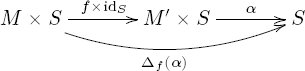
After Proposition 4.1.4.12 we will know that ∆f(α): M × S → S is indeed a monoid action, and we say that it is given by restriction of scalars along f.
Proposition 4.1.4.12. Let
Proof. Refer to Remark 4.1.2.2, We assume α is a monoid action and want to show that ∆f(α) is too. We have ∆f(α)(e, s) = α(f(e), s) = α(e′, s) = s. We also have
Then the unit law and the multiplication law hold.
Example 4.1.4.13. Let ℕ and ℤ denote the additive monoids of natural numbers and integers respectively, and let i: ℕ → ℤ be the inclusion, which Example 4.1.4.2 showed is a monoid homomorphism. There is an action α: ℤ × ℝ → ℝ of the monoid ℤ on the set ℝ of real numbers, given by α(n, x) = n + x. Clearly, this action works just as well if we restrict the scalars to ℕ ⊆ ℤ, and allow only adding natural numbers to real numbers. This is the action ∆iα: ℕ × ℝ → ℝ, because for (n, x) ∈ ℕ × ℝ, we have ∆iα(n, x) = α(i(n), x) = α(n, x) = n + x, just as expected.
Example 4.1.4.14. Suppose that V is a complex vector space. In particular, this means that the monoid ℂ of complex numbers (under multiplication) acts on the elements of V. The elements of ℂ are called scalars in this context. If i: ℝ → ℂ is the inclusion of the real line inside ℂ, then i is a monoid homomorphism. Restriction of scalars in the preceding sense turns V into a real vector space, so the name “restriction of scalars” is apt.
Exercise 4.1.4.15.
Let ℕ be the free monoid on one generator, and let Σ = {a, b}. Consider the map of monoids f : ℕ → List(Σ) given by sending 1 ↦ [a, b, b, b]. Consider the state set S = {State 0, State 1, State 2}. The monoid action α: List(Σ)×S → S given in Example 4.1.3.1 can be transformed by restriction of scalars along f to an action ∆f(α) of ℕ on S. Write its action table.
4.2 Groups
Groups are monoids with the property that every element has an inverse. If we think of these structures in terms of how they act on sets, the difference between groups and monoids is that the action of every group element can be undone. One way of thinking about groups is in terms of symmetries. For example, the rotations and reflections of a square form a group because they can be undone.
Another way to think of the difference between monoids and groups is in terms of time. Monoids are likely useful in thinking about diffusion, in which time plays a role and things cannot be undone. Groups are more likely useful in thinking about mechanics, where actions are time-reversible.
4.2.1 Definition and examples
Definition 4.2.1.1. Let (M, e, ⋆) be a monoid. An element m ∈ M is said to have an inverse if there exists an m′ ∈ M such that mm′ = e and m′m = e. A group is a monoid (M, e, ⋆) in which every element m ∈ M has an inverse.
Proposition 4.2.1.2. Suppose that
Proof. Suppose that both m′ and m″ are inverses of m; we want to show that m′ = m″. This follows by the associative law for monoids:
Example 4.2.1.3. The additive monoid (ℕ, 0, +) is not a group because none of its elements are invertible, except for 0. However, the monoid of integers (ℤ, 0, +) is a group. The monoid of clock positions from Example 4.1.1.26 is also a group. For example, the inverse of Q5 is Q7 because Q5 ⋆ Q7 = e = Q7 ⋆ Q5.
Example 4.2.1.4. Consider a square centered at the origin in ℝ2. It has rotational and mirror symmetries. There are eight of these, denoted
where ρ stands for 90° counterclockwise rotation and ϕ stands for horizontal flip (across the vertical axis). So relations include ρ4 = e, ϕ2 = e, and ρ3ϕ = ϕρ. This group is called the dihedral group of order eight.
Example 4.2.1.5. The set of 3 × 3 matrices can be given the structure of a monoid, where the unit element is the 3 × 3 identity matrix, the multiplication formula is given by matrix multiplication. It is a monoid but not a group because not all matrices are invertible.
The subset of invertible matrices does form a group, called the general linear group of degree 3 and denoted GL3. Inside of GL3 is the orthogonal group, denoted O3, of matrices M such that M−1 = M⊤. These matrices correspond to symmetries of the two-dimensional sphere centered at the origin in ℝ2.
Another interesting group is the Euclidean group E(3), which consists of all isometries of ℝ3, i.e., all functions ℝ3 → ℝ3 that preserve distances.
Application 4.2.1.6. In crystallography one is often concerned with the symmetries that arise in the arrangement A of atoms in a molecule. To think about symmetries in terms of groups, we first define an atom arrangement to be a finite subset i: A ⊆ ℝ3. A symmetry in this case is an isometry of ℝ3 (see Example 4.2.1.5), say, f : ℝ3 → ℝ3, such that there exists a dotted arrow making the following diagram commute:
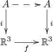
That is, it is an isometry of ℝ3 such that each atom of A is sent to a position currently occupied by an atom of A. It is not hard to show that the set of such isometries forms a group, called the space group of the crystal.
Exercise 4.2.1.7.
Let X be a finite set. A permutation of X is an isomorphism
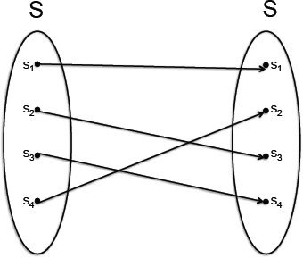
a. Devise a unit and a multiplication formula, such that the set Iso(X) of permutations of X forms a monoid.
b. Is the monoid Iso(X) always in fact a group?
Solution 4.2.1.7.
a. We can take the unit to be the identity function
b. Yes, Iso(X) is a group because every element of f ∈ Iso(S) is invertible. Namely, the fact that f is an isomorphism means that there is some f−1 ∈ Iso(S) with f ○ f−1 = f−1 ○ f = idS.
Exercise 4.2.1.8.
In Exercise 4.1.1.28 you classified the cyclic monoids. Which of them are groups?
Definition 4.2.1.9 (Group action). Let (G, e, ⋆) be a group and S a set. An action of G on S is a function : G × S → S such that for all s ∈ S and g, g′ ∈ G, we have
- e s = s;
- g (g′ s) = (g ⋆ g′) s.
In other words, considering G as a monoid, it is an action in the sense of Definition 4.1.2.1.
Example 4.2.1.10. When a group acts on a set, it has the character of symmetry. For example, consider the group whose elements are angles θ. This group may be denoted U(1) and is often formalized as the unit circle in ℂ, i.e., the set of complex numbers z = a + bi such that |z| = a2 + b2 = 1. The set of such points is given the structure of a group (U(1), 1 + 0i, ⋆) by defining the unit element to be 1 + 0i and the group law to be complex multiplication. But for those unfamiliar with complex numbers, this is simply angle addition, where we understand that 360° = 0°. If θ1 = 190° and θ2 = 278°, then θ1 ⋆ θ2 = 468° = 108°. In the language of complex numbers, z = eiθ.
The group U(1) acts on any set that we can picture as having rotational symmetry about a fixed axis, such as the earth around the north-south axis. We will define S = {(x, y, z) ∈ ℝ3 | x2 + y2 + z2 = 1} to be the unit sphere in ℝ3, and seek to understand the rotational action of U(1) on S.
We first show that U(1) acts on ℝ3 by θ (x, y, z) = (x cos θ + y sin θ, −x sin θ + y cos θ, z), or with matrix notation as
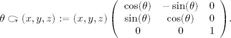
Trigonometric identities ensure that this is indeed an action.
In terms of action tables, we would need infinitely many rows and columns to express this action. Here is a sample:
Action of U(1) on ℝ3 |
||||
|---|---|---|---|---|
| ℝ3 | θ = 45° | θ = 90° | θ = 100° | ⋯ |
| (0, 0, 0) | (0, 0, 0) | (0, 0, 0) | (0, 0, 0) | ⋯ |
| (1, 0, 0) | (0.71, 0.71, 0) | (0, 1, 0) | (−0.17, 0.98, 0) | ⋯ |
| (0, 1, −4.2) | (−0.71, 0.71, −4.2) | (−1, 0, −4.2) | (−0.98, −0.17, −4.2) | ⋯ |
| (3, 4, 2) | (4.95, 0.71, 2) | (−4, 3, 2) | (3.42, −3.65, 2) | ⋯ |
| ⋮ | ⋮ | ⋮ | ⋮ | ⋱ |
Since S ⊆ ℝ3 consists of all vectors of length 1, we need to check that the action preserves length, i.e., that if (x, y, z) ∈ S, then θ (x, y, z) ∈ S. In this way we will have confirmed that U(1) indeed acts on S. The calculation begins by assuming x2 + y2 + z2 = 1, and one uses trigonometric identities to see that
Exercise 4.2.1.11.
Let X be a set and consider the group Iso(X) of permutations of X (see Exercise 4.2.1.7). Find a canonical action of IsoX on X.
Solution 4.2.1.11.
The elements of Iso(X) are isomorphisms
Definition 4.2.1.12. Let G be a group acting on a set X. For any point x ∈ X, the orbit of x, denoted Gx, is the set
Application 4.2.1.13. Let S be the surface of the earth, understood as a sphere, and let G = U(1) be the group of angles acting on S by rotation as in Example 4.2.1.10. The orbit of any point p = (x, y, z) ∈ S is the set of points on the same latitude line as p.
One may also consider a small band around the earth, i.e., the set A = {(x, y, z) | 1.0 ⩽ x2 + y2 + z2 ⩽ 1.05}. The action of U(1) S extends to an action U(1) A. The orbits are latitude-lines-at-altitude. A simplifying assumption in climatology may be given by assuming that U(1) acts on all currents in the atmosphere in an appropriate sense. Thus, instead of considering movement within the whole space A, we only allow movement that behaves the same way throughout each orbit of the group action.
Exercise 4.2.1.14.
a. Consider the U(1) action on the sphere S given in Example 4.2.1.10. Describe the set of orbits of this action.
b. What are the orbits of the canonical action of the permutation group Iso{1,2,3} on the set {1, 2, 3}? (See Exercise 4.2.1.11.)
Exercise 4.2.1.15.
Let (G, e, ⋆) be a group and X a set on which G acts. Is “being in the same orbit” an equivalence relation on X?
Definition 4.2.1.16. Let G and G′ be groups. A group homomorphism f : G → G′ is defined to be a monoid homomorphism G → G′, where G and G′ are being regarded as monoids in accordance with Definition 4.2.1.1.
4.3 Graphs
Unless otherwise specified, whenever I speak of graphs in this book, I do not mean curves in the plane, such as parabolas, or pictures of functions generally, but rather systems of vertices and arrows.
Graphs are taken to be directed, meaning that every arrow points from a vertex to a vertex; rather than merely connecting vertices, arrows have direction. If a and b are vertices, there can be many arrows from a to b, or none at all. There can be arrows from a to itself. Here is the formal definition in terms of sets and functions.
4.3.1 Definition and examples
Definition 4.3.1.1. A graph G consists of a sequence G ≔ (V, A, src, tgt), where
- V is a set, called the set of vertices of G (singular: vertex);
- A is a set, called the set of arrows of G;
- src: A → V is a function, called the source function for G;
- tgt: A → V is a function, called the target function for G.
Given an arrow a ∈ A we refer to src(a) as the source vertex of a and to tgt(a) as the target vertex of a.
To draw a graph, first draw a dot for every element of V. Then for every element a ∈ A, draw an arrow connecting dot src(a) to dot tgt(a).
Example 4.3.1.2 (Graph). Here is a picture of a graph G = (V, A, src, tgt):
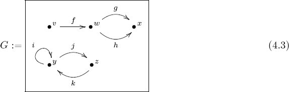
We have V = {v, w, x, y, z} and A = {f, g, h, i, j, k}. The source and target functions src, tgt: A → V are expressed in the following table (left-hand side):
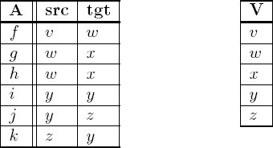
In fact, all the data of the graph G is captured in these two tables—together they tell us the sets A and V and the functions src and tgt.
Example 4.3.1.3. Every olog has an underlying graph, in the sense of Definition 4.3.1.1. An olog has additional information, namely, information about which pairs of paths are declared equivalent as well as text that has certain English-readability rules.
Exercise 4.3.1.4.
a. Draw the graph corresponding to the following tables:
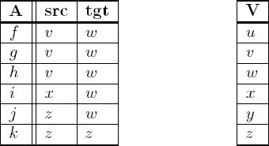
b. Write two tables like the ones in part (a) corresponding to the following graph:
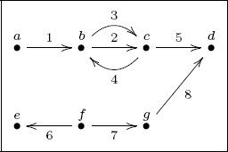
Exercise 4.3.1.5.
a. Let A = {1, 2, 3, 4, 5} and B = {a, b, c}. Draw them, and choose an arbitrary function f : A → B and draw it.
b. Let A ⊔ B be the coproduct of A and B (Definition 3.1.2.1), and let
Exercise 4.3.1.6.
a. Let V be a set. Suppose we just draw the elements of V as vertices and have no arrows between them. Is this a graph?
b. Given V, is there any other canonical or somehow automatic nonrandom procedure for generating a graph with those vertices?
Solution 4.3.1.6.
a. Yes. With arrows A = ∅, there is a unique function !: A → V, so we have (V, ∅, !, !). This is called the discrete graph on vertices V.
b. Yes. Choose as arrows A = V × V, and let src: A → V and tgt: A → V be the projections. This gives the indiscrete graph Ind(V) ≔ (V, V × V, π1, π2) on vertices V. An indiscrete graph is one in which each vertex is connected (backward and forward) to every other vertex and also points to itself.
Another would be (V, V, idV, idV), which puts a loop at every vertex and has no other arrows.
Example 4.3.1.7. Recall from Construction 3.2.2.6 the notion of a bipartite graph, defined to be a span (i.e., pair of functions; see Definition 3.2.2.1)
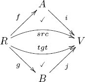
Then (V, R, src, tgt) is a graph that would be drawn exactly as specified the drawing of spans in Construction 3.2.2.6.
Example 4.3.1.8. Let n ∈ ℕ be a natural number. The chain graph of length n, denoted [n], is the following graph:
In general, [n] has n arrows and n + 1 vertices. In particular, when n = 0, we have that [0] is the graph consisting of a single vertex and no arrows.
Example 4.3.1.9. Let G = (V, A, src, tgt) be a graph, Suppose that we want to spread it out over discrete time, so that each arrow does not occur within a given time slice but instead over a quantum unit of time.
Let [ℕ] = (ℕ, ℕ, n ↦n, n ↦ n + 1) be the graph depicted:
The discussion of limits in a category (see Chapter 6) clarifies that products can be taken in the category of graphs (see Example 6.1.1.5), so [ℕ] × G will make sense. For now, we construct it by hand.
Let T(G) = (V × ℕ, A × ℕ, src′, tgt′) be a new graph, where for a ∈ A and n ∈ ℕ, we have src′(a, n) ≔ (src(a), n) and tgt′(a, n) = (tgt(a), n + 1).
Let G be the following graph:
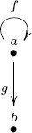
Then T(G) will be the graph
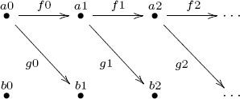
The f arrows still take a’s to a’s, and the g arrows still take a’s to b’s, but they always march forward in time.
Exercise 4.3.1.10.
Let G be the following graph:
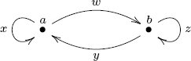
Draw the graph T(G) defined in Example 4.3.1.9, using ellipses (⋯) if necessary.
Solution 4.3.1.10.
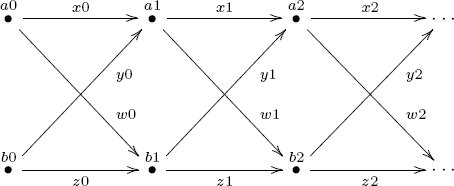
Exercise 4.3.1.11.
Consider the following infinite graph G = (V, A, src, tgt):
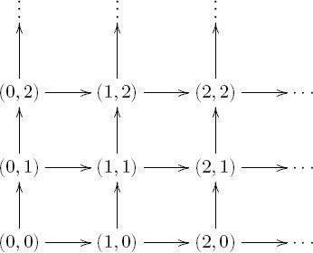
a. Write the sets A and V.
b. What are the source and target functions A → V?
Exercise 4.3.1.12.
A graph is a pair of functions A ⇉ V. This sets up the notion of equalizer and coequalizer (see Definitions 3.2.3.1 and 3.3.3.1).
a. What feature of a graph G is captured by the equalizer of its source and target functions?
b. What feature of a graph G is captured by the coequalizer of its source and target functions?
Solution 4.3.1.12.
a. The equalizer of src, tgt is the set of loops in G, i.e., arrows pointing from a vertex to itself.
b. The coequalizer of srs, tgt is the set of connected components in G. See Exercise 3.3.1.11.
4.3.2 Paths in a graph
One usually has some idea of what a path in a graph is, especially if one is is told that a path must always follow the direction of arrows. The following definition makes this idea precise. In particular, one can have paths of any finite length n ∈ ℕ, even length 0 or 1. Also, we want to be able to talk about the source vertex and target vertex of a path as well as about concatenation of paths.
Definition 4.3.2.1. Let G = (V, A, src, tgt) be a graph. A path of length n in G, denoted
of arrows in G, denoted
We denote by PathG the set of paths (of any length) in G, i.e.,
Every path p ∈ PathG has a source vertex and a target vertex, and we may denote these
There is a concatenation operation on paths. Given a path p: v → w and q : w → x, we define the concatenation, denoted p ++ q : v → x, using concatenation of lists (see Definition 4.1.1.13). That is, if
Example 4.3.2.2. Let G = (V, A, src, tgt) be a graph, and suppose v ∈ V is a vertex. If p: v → v is a path of length |p| ∈ ℕ with
Example 4.3.2.3. In diagram (4.3), page 120, we see a graph G. In it, there are no paths from v to y, one path (namely,
from y to y. There are other paths as well in G, including the five trivial paths.
Exercise 4.3.2.4.
How many paths are there in the following graph?
Exercise 4.3.2.5.
Let G be a graph, and consider the set PathG of paths in G. Suppose someone claimed that there is a monoid structure on the set PathG, where the multiplication formula is given by concatenation of paths. Are they correct? Why, or why not?
4.3.3 Graph homomorphisms
A graph (V, A, src, tgt) involves two sets and two functions. For two graphs to be comparable, their two sets and their two functions should be appropriately comparable.
Definition 4.3.3.1. Let G = (V, A, src, tgt) and G′ = (V′, A′, src′, tgt′) be graphs. A graph homomorphism f from G to G′, denoted f : G → G′, consists of two functions f0: V → V′ and f1: A → A′ such that the diagrams in (4.5) commute:
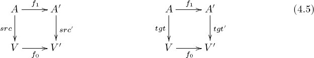
Remark 4.3.3.2. The conditions (4.5) may look abstruse at first, but they encode a very important idea, roughly stated “arrows are bound to their endpoints.” Under a map of graphs G → G′, one cannot flippantly send an arrow of G any old arrow of G′: it must still connect the vertices it connected before. Following is an example of a mapping that does not respect this condition: a connects 1 and 2 before but not after:

The commutativity of the diagrams in (4.5) is exactly what is needed to ensure that arrows are handled in the expected way by a proposed graph homomorphism.
Example 4.3.3.3 (Graph homomorphism). Let G = (V, A, src, tgt) and G′ = (V′, A′, src′, tgt′) be the graphs drawn in (4.6):
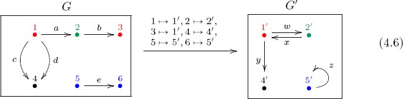
The colors indicate the choice of function f0: V → V′. Given that choice, condition (4.5) imposes in this case that there is a unique choice of graph homomorphism f : G → G′. In other words, where arrows are sent is completely determined by where vertices are sent, in this particular case.
Exercise 4.3.3.4.
a. Where are a, b, c, d, e sent under f1 : A → A′ in diagram (4.6)?
b. Choose an element x ∈ A, and check that it behaves as specified by diagram (4.5).
Exercise 4.3.3.5.
Let G be a graph, let n ∈ ℕ be a natural number, and let [n] be the chain graph of length n, as in Example 4.3.1.8. Is a path of length n in G the same thing as a graph homomorphism [n] → G, or are there subtle differences? More precisely, is there always an isomorphism between the set of graph homomorphisms [n] → G and the set
Solution 4.3.3.5.
Yes, a path of length n in G is the same thing as a graph homomorphism [n] → G. The discussion of categories in Chapter 5 makes clear how to write this fact formally as an isomorphism:
Exercise 4.3.3.6.
Given a homomorphism of graphs f : G → G′, there is an induced function between their sets of paths, Path(f): Path(G) → Path(G′).
a. Explain how this works.
b. Is it the case that for every n ∈ ℕ, the function Path(f) carries Path(n)(G) to Path(n)(G′), or can path lengths change in this process?
c. Suppose that f0 and f1 are injective (meaning no two distinct vertices in G are sent to the same vertex (resp. for arrows) under f). Does this imply that Path(f) is also injective (meaning no two distinct paths are sent to the same path under f)?
d. Suppose that f0 and f1 are surjective (meaning every vertex in G′ and every arrow in G′ is in the image of f). Does this imply that Path(f) is also surjective? Hint: At least one of the answers to parts (b)–(d) is no.
Exercise 4.3.3.7.
Given a graph (V, A, src, tgt), let 〈src, tgt〉: A → V × V be the function guaranteed by the universal property for products. One might hope to summarize condition (4.5) for graph homomorphisms by the commutativity of the single square
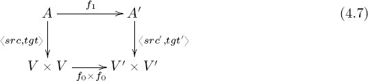
Is the commutativity of the diagram in (4.7) indeed equivalent to the commutativity of the diagrams in (4.5)?
Solution 4.3.3.7.
Yes. This follows from the universal property for products, Proposition 3.1.1.10.
4.3.3.8 Binary relations and graphs
Definition 4.3.3.9. Let X be a set. A binary relation on X is a subset R ⊆ X × X.
If X = ℕ is the set of integers, then the usual ⩽ defines a binary relation on X: given (m, n) ∈ ℕ × ℕ, we put (m, n) ∈ R iff m ⩽ n. As a table it might be written as in the left-hand table in (4.8):
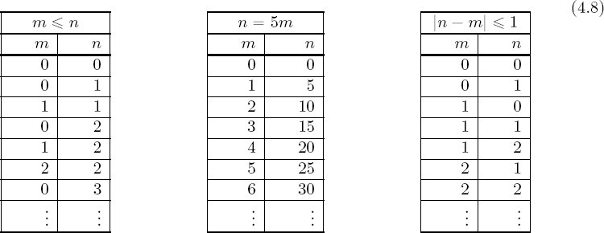
The middle table is the relation {(m, n) ∈ ℕ × ℕ | n = 5m} ⊆ ℕ × ℕ, and the right-hand table is the relation {(m, n) ∈ ℕ × ℕ | |n − m| ⩽ 1} ⊆ ℕ × ℕ.
Exercise 4.3.3.10.
A relation on ℝ is a subset of ℝ × ℝ, and one can indicate such a subset of the plane by shading. Choose an error bound ϵ > 0, and draw the relation one might refer to as ϵ-approximation. To say it another way, draw the relation “x is within ϵ of y.”
Exercise 4.3.3.11.
Recall that (4.8) uses tables to express relations; it may help to use the terminology of tables in answering some of the following questions.
a. If R ⊆ S × S is a binary relation, find a natural way to make a graph GR from it, having vertices S.
b. What is the set A of arrows in GR?
c. What are the source and target functions src, tgt: A → S in GR?
d. Consider the seven number rows in the left-hand table in (4.8), ignoring the elipses. Draw the corresponding graph.
e. Do the same for the right-hand table in (4.8).
Solution 4.3.3.11.
a. We have two projections π1, π2 : S × S → S, and we have an inclusion i: R ⊆ S × S. Thus we have a graph
The idea is that for each row in the table, we draw an arrow from the first column’s value to the second column’s value.
b. It is R, which one could call “the number of rows in the table.”
c. These are π1 ○ i and π2 ○ i, which one could call “the first and second columns in the table.” In other words, GR ≔ (S, R, π1 ○ i, π2 ○ i).
d. The seven solid arrows in the following graph correspond to the seven displayed rows in the left-hand table, and we include 3 more dashed arrows to complete the picture (they still satisfy the ⩽ relation).
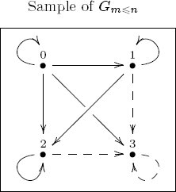
e. Seven rows, seven arrows:
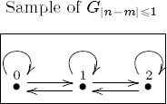
Exercise 4.3.3.12.
a. If (V, A, src, tgt) is a graph, find a natural way to make a binary relation R ⊆ V × V from it.
b. For the left-hand graph G in (4.6), and write out the corresponding binary relation in table form.
Exercise 4.3.3.13.
a. Given a binary relation R ⊆ S × S, you know from Exercise 4.3.3.11 how to construct a graph out of it, and from Exercise 4.3.3.12 how to make a new binary relation out of that, making a roundtrip. How does the resulting relation compare with the original?
b. Given a graph G = (V, A, src, tgt), you know from Exercise 4.3.3.12 how to make a new binary relation out of it, and from Exercise 4.3.3.11 how to construct a new graph out of that, making the other roundtrip. How does the resulting graph compare with the original?
4.4 Orders
People usually think of certain sets as though they come with a canonical order. For example, one might think the natural numbers come with the ordering by which 3 < 5, or that the letters in the alphabet come with the order by which b < e. But in fact we put orders on sets, and some orders are simply more commonly used. For instance, one could order the letters in the alphabet by frequency of use, in which case e would come before b. Given different purposes, we can put different orders on the same set. For example, in Example 4.4.3.2 we give a different ordering on the natural numbers that is useful in elementary number theory.
In science, we might order the set of materials in two different ways. In the first, we could consider material A to be less than material B if A is an ingredient or part of B, so water would be less than concrete. But we could also order materials based on how electrically conductive they are, whereby concrete would be less than water. This section is about different kinds of orders.
4.4.1 Definitions of preorder, partial order, linear order
Definition 4.4.1.1. Let S be a set and R ⊆ S × S a binary relation on S; if (s, s′) ∈ R, we write s ⩽ s′. Then we say that R is a preorder if, for all s, s′, s″ ∈ S, we have
Reflexivity: s ⩽ s, and
Transitivity: if s ⩽ s′ and s′ ⩽ s″, then s ⩽ s″.
We say that R is a partial order if it is a preorder and, in addition, for all s, s′ ∈ S, we have
Antisymmetry: If s ⩽ s′ and s′ ⩽ s, then s = s′.
We say that R is a linear order if it is a partial order and, in addition, for all s, s′ ∈ S, we have
Comparability: Either s ⩽ s′ or s′ ⩽ s.
We denote such a preorder (or partial order or linear order) by (S, ⩽).
Exercise 4.4.1.2.
a. The relation in the left-hand table in (4.8) is a preorder. Is it a linear order?
b. Show that neither the middle table nor the right-hand table in (4.8) is even a preorder.
Example 4.4.1.3 (Partial order not linear order). The following is an olog for playing cards:
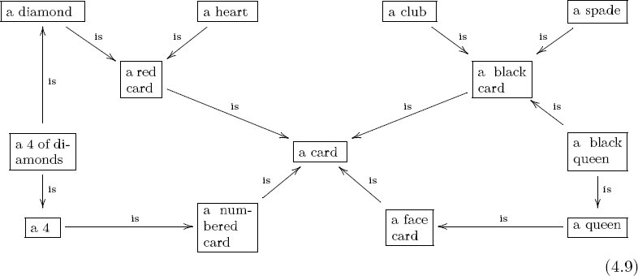
We can put a binary relation on the set of boxes here by saying A ⩽ B if there is a path A → B. One can see immediately that this is a preorder because length 0 paths give reflexivity, and concatenation of paths gives transitivity. To see that it is a partial order we only note that there are no loops of any length. But this partial order is not a linear order because there is no path (in either direction) between, e.g., ⌜a 4 of diamonds⌝ and ⌜a black queen⌝, so it violates the comparability condition.
Remark 4.4.1.4. Note that olog (4.9) in Example 4.4.1.3 is a good olog in the sense that given any collection of cards (e.g., choose 45 cards at random from each of seven decks and throw them in a pile), they can be classified according to it. In other words, each box in the olog will refer to some subset of the pile, and every arrow will refer to a function between these sets. For example, the arrow
Example 4.4.1.5 (Preorder, not partial order). Every equivalence relation is a preorder, but rarely are they partial orders. For example, if S = {1, 2} and we put R = S × S, then this is an equivalence relation. It is a preorder but not a partial order (because 1 ⩽ 2 and 2 ⩽ 1, but 1 ≠ 2, so antisymmetry fails).
Application 4.4.1.6. Classically, we think of time as linearly ordered. A model is (ℝ, ⩽), the usual linear order on the set of real numbers. But according to the theory of relativity, there is not actually a single order to the events in the universe. Different observers correctly observe different orders on the set of events.
Example 4.4.1.7 (Finite linear orders). Let n ∈ ℕ be a natural number. Define a linear order [n] = ({0, 1, 2, … , n}, ⩽) in the standard way. Pictorially,
Every finite linear order, i.e., linear order on a finite set, is of the preceding form. That is, though the labels might change, the picture would be the same. This can be made precise when morphisms of orders are defined (see Definition 4.4.4.1)
Exercise 4.4.1.8.
Let S = {1, 2, 3}.
a. Find a preorder R ⊆ S × S such that the set R is as small as possible. Is it a partial order? Is it a linear order?
b. Find a preorder R′ ⊆ S × S such that the set R′ is as large as possible. Is it a partial order? Is it a linear order?
Exercise 4.4.1.9.
a. List all the preorder relations possible on the set {1, 2}.
b. For any n ∈ ℕ, how many linear orders exist on the set {1, 2, 3, … , n}?
c. Does your formula work when n = 0?
Remark 4.4.1.10. We can draw any preorder (S, ⩽) as a graph with vertices S and with an arrow a → b if a ⩽ b. These are precisely the graphs with the following two properties for any vertices a, b ∈ S:
1. There is at most one arrow a → b.
2. If there is a path from a to b, then there is an arrow a → b.
If (S, ⩽) is a partial order, then the associated graph has an additional no-loops property:
3. If n ∈ ℕ is an integer with n ⩾ 2, then there are no paths of length n that start at a and end at a.
If (S, ⩽) is a linear order then there is an additional comparability property:
4. For any two vertices a, b, there is an arrow a → b or an arrow b → a.
Given a graph G, we can create a binary relation ⩽ on its set S of vertices as follows. Put a ⩽ b if there is a path in G from a to b. This relation will be reflexive and transitive, so it is a preorder. If the graph satisfies property 3, then the preorder will be a partial order, and if the graph also satisfies property 4, then the partial order will be a linear order. Thus graphs give us a nice way to visualize orders.
Slogan 4.4.1.11.
A graph generates a preorder: v ⩽ w if there is a path v → w.
Exercise 4.4.1.12.
Let G = (V, A, src, tgt) be the following graph:
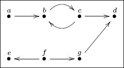
In the corresponding preorder, which of the following are true?
a. a ⩽ b.
b. a ⩽ d.
c. c ⩽ b.
d. b = c.
e. e ⩽ f.
f. f ⩽ d.
Exercise 4.4.1.13.
a. Let S = {1, 2}. The set ℙ(S) of subsets of S form a partial order. Draw the associated graph.
b. Repeat this for Q = ∅, R = {1}, and T = {1, 2, 3}. That is, draw the partial orders on ℙ(Q), ℙ(R), and ℙ(T).
c. Do you see n-dimensional cubes?
Solution 4.4.1.13.
a.
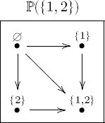
b.
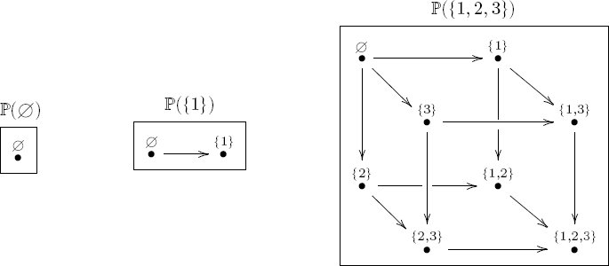
c. Yes. The graph associated to ℙ(n) looks like an n-dimensional cube.
Definition 4.4.1.14. Let (S, ⩽) be a preorder. A clique is a subset S′ ⊆ S such that for each a, b ∈ S′, one has a ⩽ b.
Exercise 4.4.1.15.
True or false: A partial order is a preorder that has no cliques? (If false, is there a nearby true statement?)
Solution 4.4.1.15.
False. Every element is always in its own clique, so if X is a partial order with at least one element, then it has a clique. But a nearby statement is true. Let’s define a nontrivial clique to be a clique consisting of two or more elements.
Slogan.
A partial order is a preorder that has no nontrivial cliques.
Just as every relation generates an equivalence relation (see Proposition 3.3.1.7), every relation also generates a preorder.
Example 4.4.1.16. Let X be a set and R ⊆ X × X a relation. For elements x, y ∈ X, we say there is an R-path from x to y if there exists a natural number n ∈ ℕ and elements x0, x1, … , xn ∈ X such that
- x = x0;
- xn = y;
- for all i ∈ ℕ, if 0 ⩽ i ⩽ n − 1, then (xi, xi+1) ∈ R.
Let
Containment. If (x, y) ∈ R, then
Reflexivity. For all x ∈ X, we have
Transitivity. For all x, y, z ∈ X, if
Let’s write x ⩽ y if
We can turn any relation into a preorder in a canonical way. Here is a concrete case of this idea.
Let X = {a, b, c, d} and suppose given the relation {(a, b), (b, c), (b, d), (d, c), (c, c)}. This is neither reflexive nor transitive, so it is not a preorder. To make it a preorder we follow the preceding prescription. Starting with R-paths of length n = 0, we put {(a, a), (b, b), (c, c), (d, d)} into
is reflexive and transitive, hence a preorder.
Exercise 4.4.1.17.
Let X = {a, b, c, d, e, f}, and let R = {(a, b), (b, c), (b, d), (d, e), (f, a)}.
a. What is the preorder
b. Is it a partial order?
Exercise 4.4.1.18.
Let X be the set of people, and let R ⊆ X × X be the relation with (x, y) ∈ R if x is the child of y. Describe the preorder generated by R in layperson’s terms.
4.4.2 Meets and joins
Let X be any set. Recall from Definition 3.4.4.9 that the power-set of X, denoted ℙ(X), is the set of subsets of X. There is a natural order on ℙ(X) given by the subset relationship, as exemplified in Exercise 4.4.1.13. Given two elements a, b ∈ ℙ(X), we can consider them as subsets of X and take their intersection as an element of ℙ(X), denoted a ∩ b. We can also consider them as subsets of X and take their union as an element of ℙ(X), denoted a ∪ b. The intersection and union operations are generalized in the following definition.
Definition 4.4.2.1. Let (S, ⩽) be a preorder, and let s, t ∈ S be elements. A meet of s and t is an element w ∈ S satisfying the following universal property:
- w ⩽ s and w ⩽ t,
- for any x ∈ S, if x ⩽ s and x ⩽ t, then x ⩽ w.
If w is a meet of s and t, we write w ≅ s ∧ t.
A join of s and t is an element w ∈ S satisfying the following universal property:
- s ⩽ w and t ⩽ w,
- for any x ∈ S, if s ⩽ x and t ⩽ x, then w ⩽ x.
If w is a join of s and t, we write w ≅ s ∨ t.
That is, the meet of s and t is the biggest thing that is smaller than both, i.e., a greatest lower bound, and the join of s and t is the smallest thing that is bigger than both, i.e., a least upper bound. Note that the meet of s and t might be s or t itself.
It may happen that s and t have more than one meet (or more than one join). However, any two meets of s and t must be in the same clique, by the universal property (and the same for joins).
Exercise 4.4.2.2.
Consider the partial order from Example 4.4.1.3.
a. What is the join of ⌜a diamond⌝ and ⌜a heart⌝?
b. What is the meet of ⌜a black card⌝ and ⌜a queen⌝?
c. What is the meet of ⌜a diamond⌝ and ⌜a card⌝?
Not every two elements in a preorder need have a meet, nor need they have a join.
Exercise 4.4.2.3.
a. If possible, find two elements in the partial order from Example 4.4.1.3 that do not have a meet.7
b. If possible, find two elements that do not have a join (in that preorder).
Solution 4.4.2.3.
a. There is no meet for ⌜a heart⌝ and ⌜a club⌝; no card is both.
b. Every two elements have a join here. But note that some of these joins are “wrong” because the olog is not complete. For example, we have ⌜a 4⌝ ∨ ⌜a queen⌝ = ⌜a card⌝, whereas the correct answer would be ⌜a card that is either a 4 or a queen⌝.
Exercise 4.4.2.4.
As mentioned, the power-set S ≔ ℙ(X) of any set X naturally has the structure of a partial order. Its elements s ∈ S correspond to subsets s ⊆ X, and we put s ⩽ t if and only if s ⊆ t as subsets of X. The meet of two elements is their intersection as subsets of X, s ∧ t = s ∩ t, and the join of two elements is their union as subsets of X, s ∨ t = s ∪ t.
a. Is it possible to put a monoid structure on the set S in which the multiplication formula is given by meets? If so, what would the unit element be?
b. Is it possible to put a monoid structure on the set S in which the multiplication formula is given by joins? If so, what would the unit element be?
Example 4.4.2.5 (Trees). A tree, i.e., a system of nodes and branches, all of which emanate from a single node called the root, is a partial order but generally not a linear order. A tree (T, ⩽) can either be oriented toward the root (so the root is the largest element of the partial order) or away from the root (so the root is the smallest element); let’s only consider the former.
A tree is pictured as a graph in (4.10). The root is labeled e.
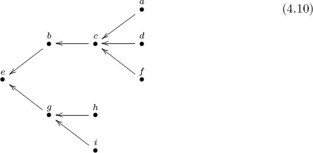
In a tree every pair of elements s, t ∈ T has a join s ∧ t (their closest mutual ancestor). On the other hand, if s and t have a join c = s ∨ t, then either c = s or c = t.
Exercise 4.4.2.6.
Consider the tree drawn in (4.10).
a. What is the join i ∨ h?
b. What is the join h ∨ b?
c. What is the meet b ∧ a?
d. What is the meet b ∧ g?
4.4.3 Opposite order
Definition 4.4.3.1. Let
Example 4.4.3.2. Consider the preorder
Exercise 4.4.3.3.
Suppose that
a. If
b. If
Exercise 4.4.3.4.
Suppose that
4.4.4 Morphism of orders
An order (S, ⩽), be it a preorder, a partial order, or a linear order, involves a set and a binary relation. For two orders to be comparable, their sets and their relations should be appropriately comparable.
Definition 4.4.4.1. Let
Example 4.4.4.2. Let X and Y be sets, and let f : X → Y be a function. Then for every subset X′ ⊆ X, its image f(X′) ⊆ Y is a subset (see Exercise 2.1.2.8). Thus we have a function F : ℙ(X) → ℙ(Y), given by taking images. This is a morphism of partial orders (ℙ(X), ⊆) → (ℙ(Y), ⊆). Indeed, if a ⊆ b in ℙ(X), then f(a) ⊆ f(b) in ℙ(Y).
Application 4.4.4.3. It is often said that a team is only as strong as its weakest member. Is this true for materials? The hypothesis that a material is only as strong as its weakest constituent can be understood as follows.
Recall from the beginning of Section 4.4 (page 132) that we can put several different orders on the set M of materials. One example is the order given by constituency (m ⩽C m′ if m is an ingredient or constituent of m′). Another order is given by strength: m ⩽S m′ if m′ is stronger than m (in some fixed setting).
Is it true that if material m is a constituent of material m′, then the strength of m′ is less than or equal to the strength of m? Mathematically the question would be, Is there a morphism of preorders (M, ⩽C) → (M, ⩽S)op?
Exercise 4.4.4.4.
Let X and Y be sets, and let f : X → Y be a function. Then for every subset Y′ ⊆ Y, its preimage f−1(Y′) ⊆ X is a subset (see Definition 3.2.1.12). Thus we have a function F : ℙ(Y) → ℙ(X), given by taking preimages. Is it a morphism of partial orders?
Example 4.4.4.5. Let S be a set. The smallest preorder structure that can be put on S is to say a ⩽ b iff a = b. This is indeed reflexive and transitive, and it is called the discrete preorder on S.
The largest preorder structure that can be put on S is to say a ⩽ b for all a, b ∈ S. This again is reflexive and transitive, and it is called the indiscrete preorder on S.
Exercise 4.4.4.6.
Let S be a set, and let (T, ⩽T) be a preorder. Let ⩽D be the discrete preorder on S.
a. A morphism of preorders (S, ⩽D) → (T, ⩽T) is a function S → T satisfying certain properties (see Definition 4.4.4.1). Which functions S → T arise in this way?
b. Given a morphism of preorders (T, ⩽T) → (S, ⩽D), we get a function T → S. In terms of ⩽T, which functions T → S arise in this way?
Exercise 4.4.4.7.
Let S be a set, and let (T, ⩽T) be a preorder. Let ⩽I be the indiscrete preorder on S, as in Example 4.4.4.5.
a. Given a morphism of preorders (S, ⩽I) → (T, ⩽T), we get a function S → T. In terms of ⩽T, which functions S → T arise in this way?
b. Given a morphism of preorders (T, ⩽T) → (S, ⩽I), we get a function T → S. In terms of ⩽T, which functions T → S arise in this way?
4.4.5 Other applications
4.4.5.1 Biological classification
Biological classification is a method for dividing the set of organisms into distinct classes, called taxa. In fact, it turns out that such a classification, say, a phylogenetic tree, can be understood as a partial order C on the set of taxa. The typical ranking of these taxa, including kingdom, phylum, and so on, can be understood as morphism of orders f : C → [n], for some n ∈ ℕ.
For example, we may have a tree (see Example 4.4.2.5) that looks like this:
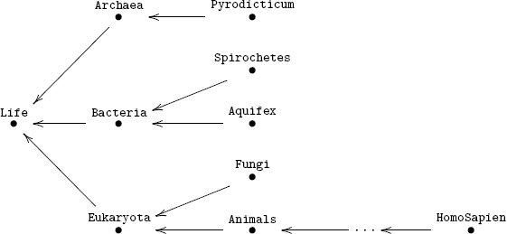
We also have a linear order that looks like this:
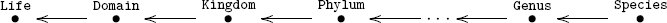
and the ranking system that puts Eukaryota at Domain and Homo Sapien at Species is an order-preserving function from the dots upstairs to the dots downstairs; that is, it is a morphism of preorders.
Exercise 4.4.5.2.
Since the phylogenetic tree is a tree, it has all joins.
a. Determine the join of dogs and humans.
b. If we did not require the phylogenetic partial order to be a tree, what would it mean if two taxa (nodes in the phylogenetic partial order), say, a and b, had meet c with c ≠ a and c ≠ b?
Exercise 4.4.5.3.
a. In your favorite scientific subject, are there any interesting classification systems that are actually orders?
b. Choose one such system; what would meets mean in that setting?
4.4.5.4 Security
Security, say of sensitive information, is based on two things: a security clearance and need to know. Security clearance might consist of levels like confidential, secret, top secret. But maybe we can throw in “President’s eyes only” and some others too, like “anyone.”
Exercise 4.4.5.5.
Does it appear that security clearance is a preorder, a partial order, or a linear order?
“Need to know” is another classification of people. For each bit of information, we do not necessarily want everyone to know about it, even everyone with the specified clearance. It is only disseminated to those who need to know.
Exercise 4.4.5.6.
Let P be the set of all people, and let
a. Is (S, ⩽) a preorder? If not, find a nearby preorder.
b. If I1 ⊆ I2, do we always have K(I1) ⩽ K(I2) or K(I2) ⩽ K(I1) or possibly neither?
c. Should the preorder (S, ⩽) have all meets?
d. Should (S, ⩽) have all joins?
4.4.5.7 Spaces and geography
Consider closed curves that can be drawn in the plane ℝ2, e.g., circles, ellipses, and kidney-bean shaped curves. The interiors of these closed curves (not including the boundary itself) are called basic open sets in ℝ2. The good thing about such an interior U is that any point p ∈ U is not on the boundary, so no matter how close p is to the boundary of U, there will always be a tiny basic open set surrounding p and completely contained in U. In fact, the union of any collection of basic open sets still has this property. That is, an open set in ℝ2 is any subset U ⊆ ℝ2 that can be formed as the union of a collection of basic open sets.
Example 4.4.5.8. Let U = {(x, y) ∈ ℝ2 | x > 0}. To see that U is open, define the following sets: for any a, b ∈ ℝ, let S(a, b) be the square parallel to the axes, with side length 1, where the upper left corner is (a, b). Note that S(a, b) is a closed curve, so if we let S′(a, b) be the interior of S(a, b), then each S′(a, b) is a basic open set. Now U is the union of S′(a, b) over the collection of all a > 0 and all b,
so U is open.
Example 4.4.5.9. The idea of open sets extends to spaces beyond ℝ2. For example, on the earth one could define a basic open set to be the interior of any region one can draw a closed curve around (with a metaphorical pen), and define open sets to be unions of these basic open sets.
Exercise 4.4.5.10.
Let (S, ⊆) be the partial order of open subsets on earth as defined in Example 4.4.5.9.
a. If ⩽ is the subset relation, is (S, ⩽) a partial order or just a preorder, or neither?
b. Does it have meets?
c. Does it have joins?
Exercise 4.4.5.11.
Let S be the set of open subsets of earth as defined in Example 4.4.5.9. For each open subset of earth, suppose we know the range of recorded temperature throughout s (i.e., the low and high throughout the region). Thus to each element s ∈ S we assign an interval T(s) ≔ {x ∈ ℝ | a ⩽ x ⩽ b}. The set V of intervals of ℝ can be partially ordered by the subset relation.
a. Does the assignment T : S → V amount to a morphism of orders?
b. If so, does it preserve meets or joins? Hint: It does not preserve both.
Solution 4.4.5.11.
a. Suppose s is a subregion of s′, e.g., New Mexico as a subregion of North America. This question is asking whether the range of temperatures recorded throughout New Mexico is a subset of the range of temperatures recorded throughout North America, which, of course, it is.
b. The question on meets is, If we take two regions s and s′ and intersect them, is the temperature range on s ∩ s′ equal to the intersection T(s) ∩ T(s′)? Clearly, if a temperature t is recorded somewhere in s ∩ s′, then it is recorded somewhere in s and somewhere in s′, so T(s ∩ s′) ⊆ T(s) ∩ T(s′). But is it true that if a temperature is recorded somewhere in s and somewhere in s′, then it must be recorded somewhere in s ∩ s′? No, that is false. So T does not preserve meets.
The question on joins is, If we take the union of two regions s and s′, is the temperature range on s∪s′ equal to the union T(s)∪T(s′)? If a temperature is recorded somewhere in s ∪ s′, then it is either recorded somewhere in s or somewhere in s′ (or both), so T(s ∪ s′) ⊆ T(s) ∪ T(s′). And if a temperature is recorded somewhere in s, then it is recorded somewhere in s ∪ s′, so T(s) ⊆ T(s ∪ s′). Similarly, T(s′) ⊆ T(s ∪ s′), so in fact T does preserve joins: T(s ∪ s′) = T(s) ∪ T(s′).
Exercise 4.4.5.12.
a. Can you think of a space relevant to an area of science for which it makes sense to assign an interval of real numbers to each open set, analogously to Exercise 4.4.5.11? For example, for a sample of some material under stress, perhaps the strain on each open set is somehow an interval?
b. Check that your assignment, which you might denote as in Exercise 4.4.5.11 by T : S → V, is a morphism of orders.
c. How does it act with respect to meets and/or joins?
4.5 Databases: schemas and instances
So far this chapter has discussed classical objects from mathematics. The present section is about databases, which are classical objects from computer science. These are truly “categories and functors, without admitting it” (see Theorem 5.4.2.3).
4.5.1 What are databases?
Data, in particular, the set of observations made during experiment, plays a primary role in science of any kind. To be useful, data must be organized, often in a row-and-column display called a table. Columns existing in different tables can refer to the same data.
A database is a collection of tables, each table T of which consists of a set of columns and a set of rows. We roughly explain the role of tables, columns, and rows as follows. The existence of table T suggests the existence of a fixed methodology for observing objects or events of a certain type. Each column c in T prescribes a single kind or method of observation, so that the datum inhabiting any cell in column c refers to an observation of that kind. Each row r in T has a fixed sourcing event or object, which can be observed using the methods prescribed by the columns. The cell (r, c) refers to the observation of kind c made on event r. All of the rows in T should refer to uniquely identifiable objects or events of a single type, and the name of the table T should refer to that type.
Example 4.5.1.1. When graphene is strained (lengthened by a factor of x ⩾ 1), it becomes stressed (carries a force in the direction of the lengthening). The following is a madeup set of data:
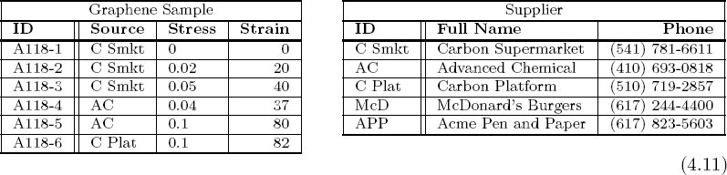
In the table in (4.11) titled “Graphene Sample,” the rows refer to graphene samples, and the table is so named. Each graphene sample can be observed according to the source supplier from which it came, the strain that it was subjected to, and the stress that it carried. These observations are the columns. In the right-hand table the rows refer to suppliers of various things, and the table is so named. Each supplier can be observed according to its full name and its phone number; these are the columns.
In the left-hand table it appears either that each graphene sample was used only once, or that the person recording the data did not keep track of which samples were reused. If such details become important later, the lab may want to change the layout of the left-hand table by adding an appropriate column. This can be accomplished using morphisms of schemas (see Section 5.4.1).
4.5.1.2 Primary keys, foreign keys, and data columns
There is a bit more structure in the tables in (4.11) than first meets the eye. Each table has a primary ID column, on the left, as well as some data columns and some foreign key columns. The primary key column is tasked with uniquely identifying different rows. Each data column houses elementary data of a certain sort. Perhaps most interesting from a structural point of view are the foreign key columns, because they link one table to another, creating a connection pattern between tables. Each foreign key column houses data that needs to be further unpacked. It thus refers us to another foreign table, in particular, to the primary ID column of that table. In (4.11) the Source column is a foreign key to the Supplier table.
Here is another example, taken from Spivak [39].
Example 4.5.1.3. Consider the bookkeeping necessary to run a department store. We keep track of a set of employees and a set of departments. For each employee e, we keep track of
E.1 the first name of e, which is a FirstNameString,
E.2 the last name of e, which is a LastNameString,
E.3 the manager of e, which is an Employee,
E.4 the department that e works in, which is a Department.
For each department d, we keep track of
D.1 the name of d, which is a DepartmentNameString,
D.2 the secretary of d, which is an Employee.
We can suppose that E.1, E.2, and D.1 are data columns (referring to names of various sorts), and E.3, E.4, and D.2 are foreign key columns (referring to managers, secretaries, etc.).
The tables in (4.12) show how such a database might look at a particular moment in time.
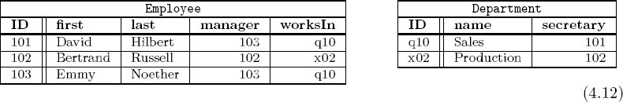
4.5.1.4 Business rules
Looking at the tables in (4.12), one may notice a few patterns. First, every employee works in the same department as his or her manager. Second, every department’s secretary works in that department. Perhaps the business counts on these rules for the way it structures itself. In that case the database should enforce those rules, i.e., it should check that whenever the data is updated, it conforms to the rules:
Together, the statements E.1, E.2, E.3, E.4, D.1, and D.2 from Example 4.5.1.3 and Rule 1 and Rule 2 constitute the schema of the database. This is formalized in Section 4.5.2.
4.5.1.5 Data columns as foreign keys
To make everything consistent, we could even say that data columns are specific kinds of foreign keys. That is, each data column constitutes a foreign key to some non-branching leaf table, which has no additional data.
Example 4.5.1.6. Consider again Example 4.5.1.3. Note that first names and last names have a particular type, which we all but ignored. We could cease to ignore them by adding three tables, as follows:
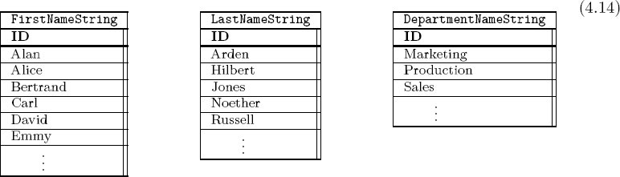
In combination, (4.12) and (4.14) form a collection of five tables, each with the property that every column is either a primary key or a foreign key. The notion of data column is now subsumed under the notion of foreign key column. Each column is either a primary key (one per table, labeled ID) or a foreign key column (everything else).
4.5.2 Schemas
Pictures here, roughly graphs, should capture the conceptual layout to which the data conforms, without being concerned (yet) with the individual pieces of data that may populate the tables in this instant. We proceed at first by example; the precise definition of schema is given in Definition 4.5.2.7.
Example 4.5.2.1. In Examples 4.5.1.3 and 4.5.1.6, the conceptual layout for a department store was given, and some example tables were shown. We were instructed to keep track of employees, departments, and six types of data (E.1, E.2, E.3, E.4, D.1, and D.2), and to follow two rules (Rule 1, Rule 2). All of this is summarized in the following picture:
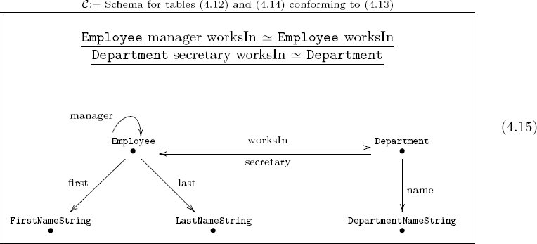
The five tables from (4.12) and (4.14) are seen as five vertices; this is also the number of primary ID columns. The six foreign key columns from (4.12) and (4.14) are seen as six arrows; each points from a table to a foreign table. The two rules from (4.13) are seen as declarations at the top of (4.15). These path equivalence declarations are explained in Definition 4.5.2.3.
Exercise 4.5.2.2.
Create a schema (consisting of dots and arrows) describing the conceptual layout of information presented in Example 4.5.1.1.
In order to define schemas, we must first define the notion of congruence for an arbitrary graph G. Roughly a congruence is an equivalence relation that indicates how different paths in G are related (see Section 4.3.2). A notion of congruence for monoids was given in Definition 4.1.1.17, and the current notion is a generalization of that. A congruence (in addition to being reflexive, symmetric, and transitive) has two sorts of additional properties: congruent paths must have the same source and target, and the composition of congruent paths with other congruent paths must yield congruent paths. Formally we have Definition 4.5.2.3.
Definition 4.5.2.3. Let G = (V, A, src, tgt) be a graph, and let PathG denote the set of paths in G (see Definition 4.3.2.1). A path equivalence declaration (or PED) is an expression of the form p ≃ q, where p, q ϵ PathG have the same source and target, src(p) = src(q) and tgt(p) = tgt(q).
A congruence on G is a relation ≃ on PathG that has the following properties:
- The relation ≃ is an equivalence relation.
- If p ≃ q, then src(p) = src(q).
- If p ≃ q, then tgt(p) = tgt(q).
- Suppose given paths p, p′: a → b and q, q′: b → c. If p ≃ p′ and q ≃ q′, then (p ++ q) ≃ (p′ ++ q′).
Remark 4.5.2.4. Any set of path equivalence declarations (PEDs) generates a congruence. The proof of this is analogous to that of Proposition 4.1.1.18. We tend to elide the difference between a congruence and a set of PEDs that generates it.
The basic idea for generating a congruence from a set R of PEDs is to proceed as follows. First find the equivalence relation generated by R. Then every time there are paths p, p′: a → b and q, q′: b → c with p ≃ p′ and q ≃ q′,
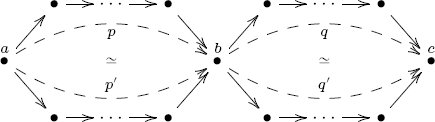
add to R the relation (p ++ q) ≃ (p′ ++ q′).
Exercise 4.5.2.5.
Suppose given the following graph G, with the PED b[w, x] ≃ b[y, z]:
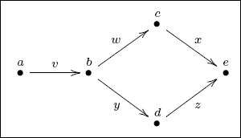
In the congruence generated by that PED, is it the case that a[v, w, x] ≃ a[v, y, z]?
Exercise 4.5.2.6.
Consider the graph shown in (4.15) and the two declarations shown at the top. They generate a congruence.
a. Is it true that the following PED is an element of this congruence?
b. What about this one?
c. What about this one?
Definition 4.5.2.7. A database schema (or simply schema)
Example 4.5.2.8. Pictured in (4.15) is a graph with two PEDs; these generate a congruence, as discussed in Remark 4.5.2.4. Thus this constitutes a database schema.
A schema can be converted into a system of tables, each with a primary key and some number of foreign keys referring to other tables, as discussed in Section 4.5.1. Definition 4.5.2.7 gives a precise conceptual understanding of what a schema is, and the following rules describe how to convert it into a table layout.
Rules of good practice 4.5.2.9. Converting a schema
(i) There should be a table for every vertex in G, and if the vertex is named, the table should have that name.
(ii) Each table should have a leftmost column called ID, set apart from the other columns by a double vertical line.
(iii) To each arrow a in G having source vertex s ≔ src(a) and target vertex t ≔ tgt(a), there should be a foreign key column a in table s, referring to table t; if the arrow a is named, column a should have that name.
Example 4.5.2.10 (Discrete dynamical system). Consider the schema
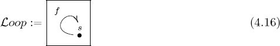
in which the congruence is trivial (i.e., generated by the empty set of PEDs.) This schema is quite interesting. It encodes a set s and a function f: s → s. Such a thing is called a discrete dynamical system. One imagines s as the set of states, and for any state x ∈ s, the function f encodes a notion of next state f(x) ∈ s. For example,
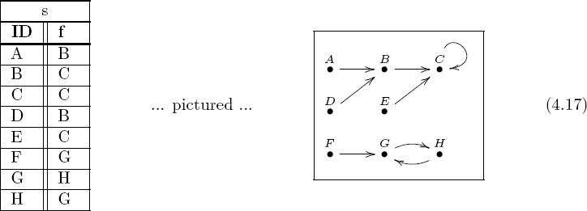
Application 4.5.2.11. Imagine a deterministic quantum-time universe in which there are discrete time steps. We model it as a discrete dynamical system, i.e., a table of the form (4.17). For every possible state of the universe we include a row in the table. The state in the next instant is recorded in the second column.8
Example 4.5.2.12 (Finite hierarchy). The schema

One problem with this, however, is if a schema has even one loop, then it can have infinitely many paths (corresponding, e.g., to an employee’s manager’s manager’s manager’s … manager).
Sometimes we know that in a given company that process eventually terminates, a famous example being that at Ben and Jerry’s ice cream company, there were only seven levels. In that case we know that an employee’s eighth-level manager is equal to his or her seventh-level manager. This can be encoded by the PED
E[mgr, mgr, mgr, mgr, mgr, mgr, mgr, mgr] ≃ E[mgr, mgr, mgr, mgr, mgr, mgr, mgr]
or more concisely, E[mgr]8 = E[mgr]7.
Exercise 4.5.2.13.
There is a nontrivial PED on
a. What is it?
b. How many equivalence classes of paths in
Exercise 4.5.2.14.
Let P be a chess-playing program, playing against itself. Given any position (where a position includes the history of the game so far), P will make a move.
a. Is this an example of a discrete dynamical system?
b. How do the rules for ending the game in a win or draw play out in this model? (Look up online how chess games end if you do not know.)
4.5.2.15 Ologging schemas
It should be clear that a database schema is nothing but an olog in disguise. The difference is basically the readability requirements for ologs. There is an important new addition in this section, namely, that schemas and ologs can be filled in with data. Conversely, we have seen that databases are not any harder to understand than ologs are.
Example 4.5.2.16. Consider the olog
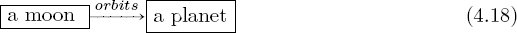
We can document some instances of this relationship using the following table:
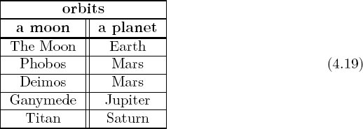
Clearly, this table of instances can be updated as more moons are discovered by the olog’s owner (be it by telescope, conversation, or research).
Exercise 4.5.2.17.
In fact, Example 4.5.2.16 did not follow rules 4.5.2.9. Strictly following those rules, copy over the data from (4.19) into tables that are in accordance with schema (4.18).
Exercise 4.5.2.18.
a. Write a schema (olog) in terms of the boxes ⌜a thing I own⌝ and ⌜a place⌝ and one arrow that might help a person remember where she decided to put random things.
b. What is a good label for the arrow?
c. Fill in some rows of the corresponding set of tables for your own case.
Exercise 4.5.2.19.
Consider the olog
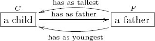
a. What path equivalence declarations would be appropriate for this olog? You can use y: F → C, t: F → C, and f: C → F for “youngest,” “tallest,” and “father,” if you prefer.
b. How many PEDs are in the congruence?
Solution 4.5.2.19.
a. There are two: F.t.f ≃ F and F.y.f ≃ F, meaning “a father F ’s tallest child has as father F ” and “a father F ’s youngest child has as father F.”
b. There are infinitely many PEDs in this congruence, including F[t, f, t] ≃ F[t] and F[t, f, y] ≃ F[y]. But the congruence is generated by only two PEDs, those in part (a).
4.5.3 Instances
Given a database schema (G, ≃), an instance of it is just a bunch of tables whose data conform to the specified layout. These can be seen throughout the previous section, most explicitly in the relationship between schema (4.15) and tables (4.12) and (4.14), and between schema (4.16) and table (4.17). Following is the mathematical definition.
Definition 4.5.3.1. Let
A. a function PK: V → Set, i.e., to each vertex v ∈ V one provides a set PK(v);9
B. for every arrow a ∈ A with v = src(a) and w = tgt(a), a function FK(a): PK(v) → PK(w).10
One must then show that the following law holds for any vertices v, w and paths p = v[a1, a2, …, am] and q = v[a′1, a′2, …, a′n] from v to w:
- If p ≃ q, then for all x ∈ PK(v), we have
FK(am) ○ · · · ○ FK(a2) ○ FK(a1)(x) = FK(a′n) ○ · · · ○ FK(a′2) ○ FK(a′1)(x) in PK(w).
Exercise 4.5.3.2.
Consider the olog in (4.20):11
It can be considered a schema of which the following is an instance:
a. What is the set PK(⌜an email⌝)?
b. What is the set PK(⌜a person⌝)?
c. What is the function
d. Interpret the sentences at the bottom of
e. Is your PED satisfied by the instance (4.21); that is, does law 1. from Definition 4.5.3.1 hold?
Example 4.5.3.3 (Monoid action table). In Example 4.1.2.9 we saw how a monoid
Exercise 4.5.3.4.
Draw (as a graph) a schema for which table (4.1), page 109, looks like an instance.
Exercise 4.5.3.5.
Suppose that
4.5.3.6 Paths through a database
Let
which first made an appearance as part of Law 1 in Definition 4.5.3.1.
Example 4.5.3.7. Consider the department store schema from Example 4.5.2.1. More specifically consider the pathEmployee[worksIn, secretary, last] in (4.15), which points from Employee to LastNameString. The instance lets us interpret this path as a function from the set of employees to the set of last names; this could be a useful function to have in real-life office settings. The instance from (4.12) would yield the following function:
| Employee | ||
|---|---|---|
| ID | Secr. name | |
| 101 | Hillbert | |
| 102 | Russell | |
| 103 | Hillbert | |
Exercise 4.5.3.8.
Consider the path p ≔ s[f, f] on the
Exercise 4.5.3.9.
Given an instance (PK, FK) on a schema
__________________
1Although the function ⋆: M × M → M is called the multiplication formula, it may have nothing to do with multiplication. It is just a formula for taking two inputs and returning an output.
2 Definition 4.1.2.1 actually defines a left action of (M, e, ⋆) on S. A right action is like a left action except the order of operations is somehow reversed. We focus on left actions is in this text, but right actions are briefly defined here for completeness. The only difference is in the second condition. Using the same notation, we replace it by the condition that for all m, n ∈ M and all s ∈ S, we have
3More precisely, the monoid homomorphism F sends a list [t1, t2, … , tn] to the list [r1,1, r1,2, r1,3, r2,1, r2,2, r2,3, … , rn,1, rn,2, rn,3], where for each 0 ≤ i ≤ n, we have ti = (ri,1, ri,2, ri,3).
4Adding stop-codons to the mix, we can handle more of
5If
6It is worth noting the connection with ev : HomSet(X, X) × X → X from (3.23).
7Use the displayed preorder, not any kind of completion of what is written there.
8If we want nondeterminism, i.e., a probabilistic distribution as the next state, we can use monads. See Section 7.3.
9The elements of PK(v) are listed as the rows of table v, or more precisely, as the leftmost cells of these rows.
10The arrow a corresponds to a column, and to each row r ∈ PK(v) the (r, a) cell contains the datum FK(a)(r).
11The text at the bottom of the box in (4.20) is a summary of a fact, i.e., a path equivalence in the olog. Under the formal rules of Englishing a fact (see (2.20)), it would read as follows. Given x, a self-email, consider the following. We know that x is a self-email, which is an email, which is sent by a person who we call P(x). We also know that x is a self-email, which is an email, which is sent to a person who we call Q(x). Fact: Whenever x is a self-email, we have P(x) = Q(x).